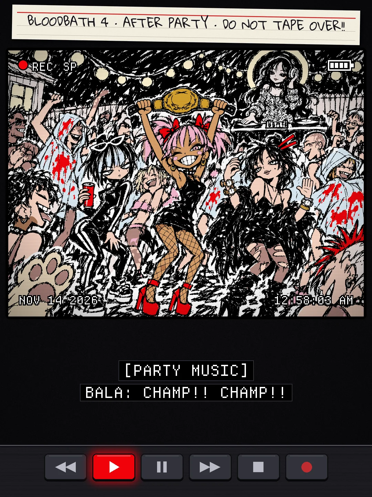
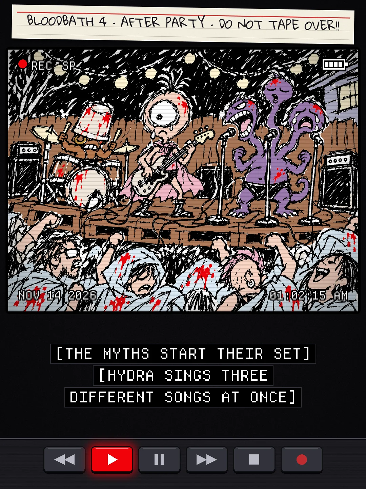
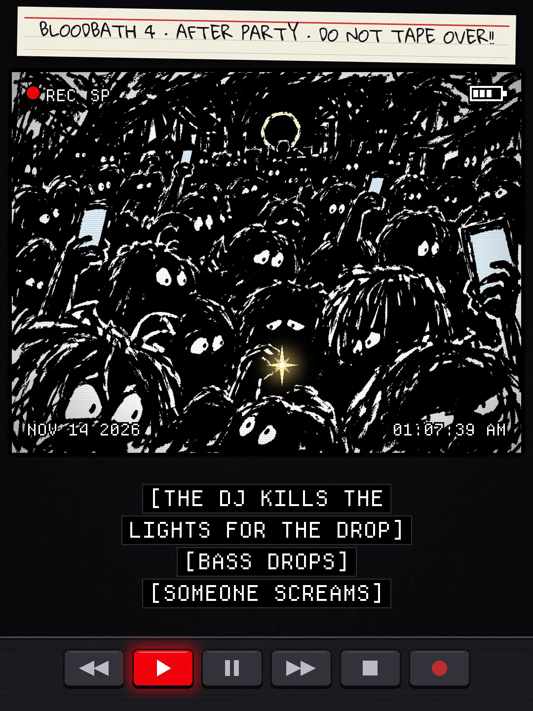
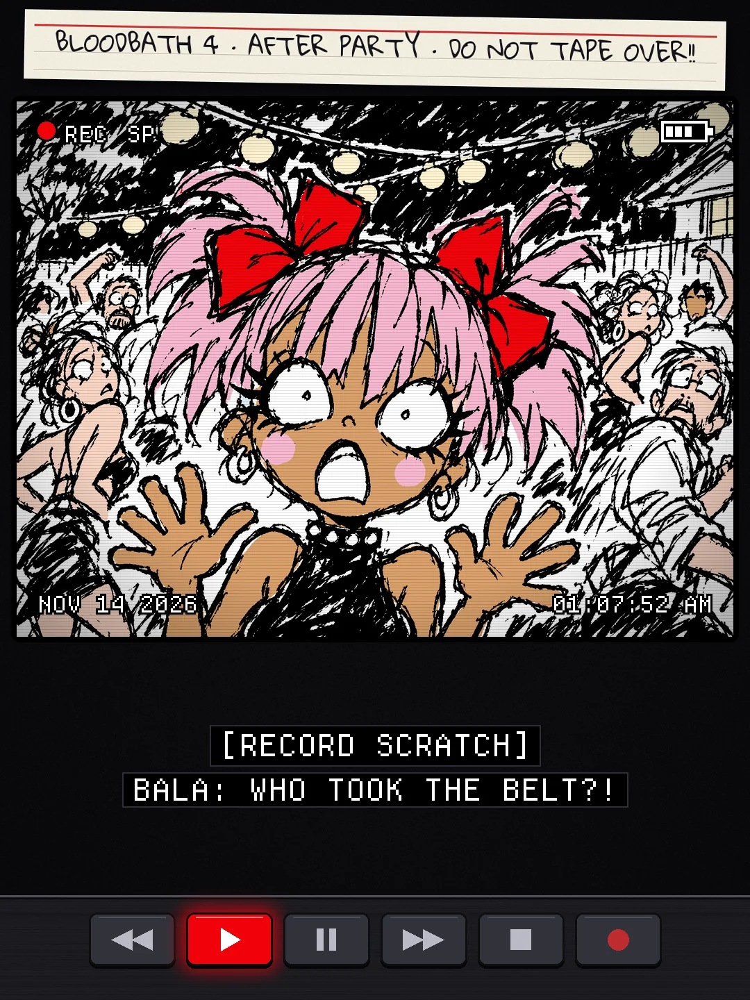
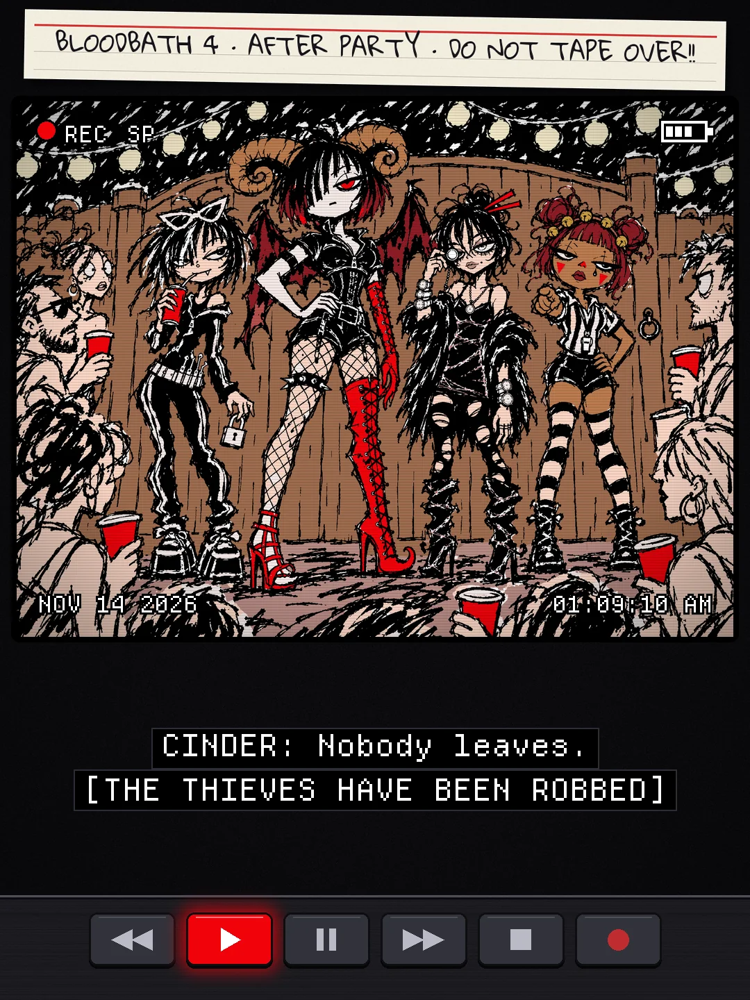
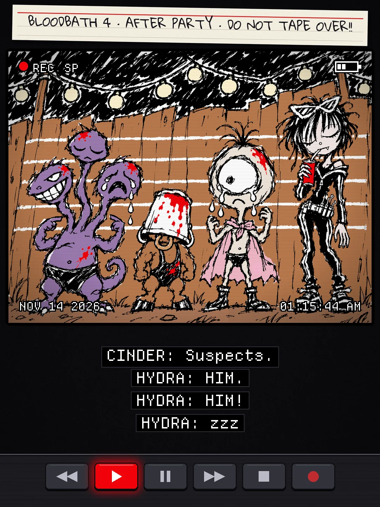
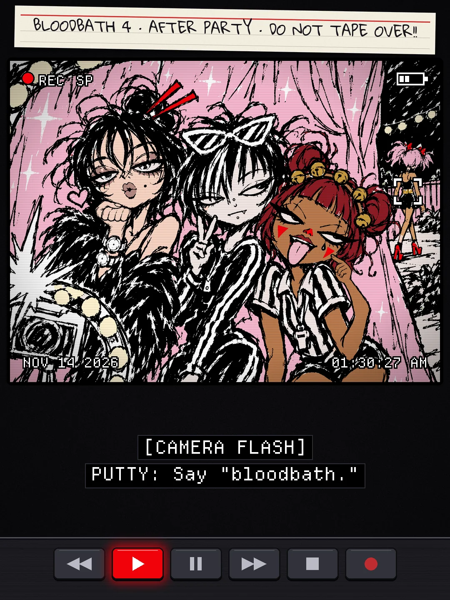
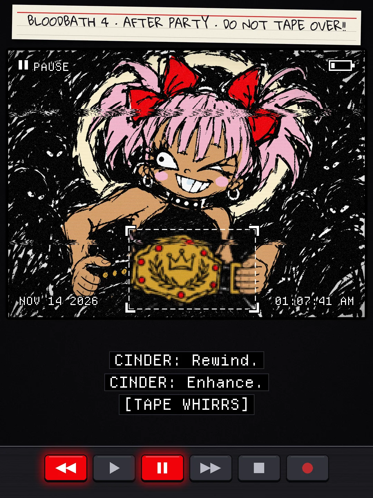
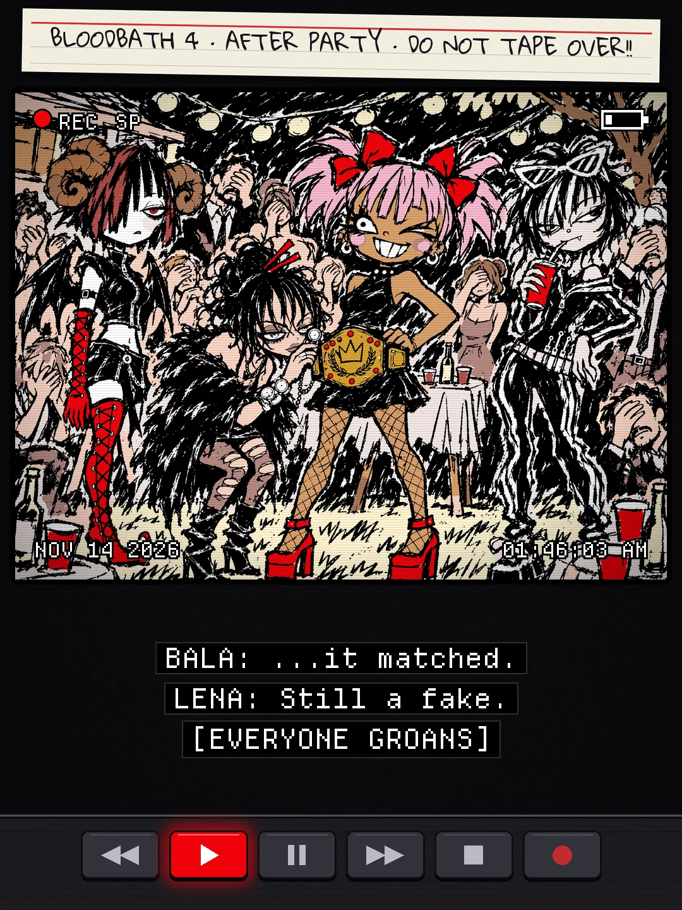
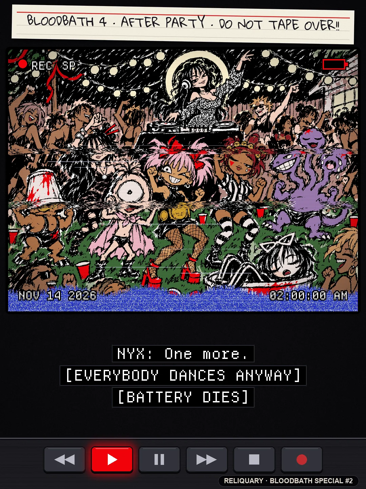
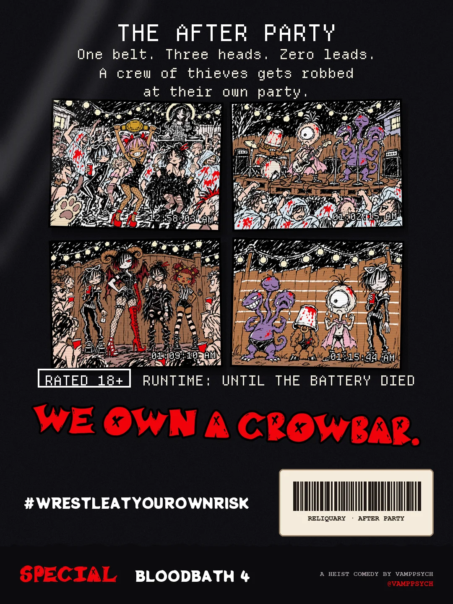
A MANHWA · SPECIAL #2
THE AFTER PARTY · PART 2
the thieves got robbed at their own party 📼
The tape's sleeve, 10 frames off the tape, the back. Read it top to bottom.











END OF THE TAPE
Part 2 of the BLOODBATH special, so it doesn't count either. The real story starts in Episode 1.